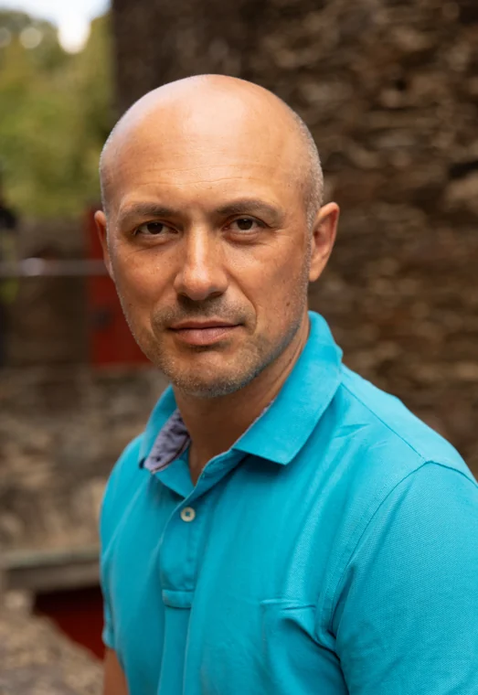

Effects of the 2014 Ukrainian Land Decentralization Reform on Land Rental Auction Performance
Вплив децентралізації на результати аукціонів з оренди землі в Україні.
Професор · Київська школа економіки
Досліджую агропродовольчі ринки, земельні відносини, міжнародну торгівлю й транспортну логістику. Працюю над питаннями відновлення України та її інтеграції до ЄС.

Я професор Київської школи економіки. Заснував Центр досліджень продовольства та землекористування при KSE і працював деканом економічних програм. Понад 20 років займаюся прикладними дослідженнями та консультуванням з економічної політики.
Здобув ступінь PhD з аграрної політики та прикладної статистики в Геттінгенському університеті, ступінь магістра економіки в Києво-Могилянській академії та ступінь магістра з фізики й інформатики в Кам’янець-Подільському національному університеті.
Вплив децентралізації на результати аукціонів з оренди землі в Україні.
Глобальні економічні наслідки скорочення аграрного експорту України через війну.
Модель міжнародної торгівлі аграрною продукцією з урахуванням транспортних обмежень під час війни.
Огляд розвитку аграрної політики України та її впливу на сектор.
Дослідження ролі малих фермерів і домогосподарств у сільському господарстві та сільській економіці.
Викладаю економетрику, кількісні методи, машинне навчання в економіці та прикладну мікроекономіку. Серед галузевих курсів є агропродовольчі й транспортні ринки, економіка європейської інтеграції та економіка конфліктів.
Курс Київської школи економіки з аналізу ринків і продовольчої політики.
Щотижневі спостереження за наявністю, асортиментом і цінами базових продуктів у магазинах.
Відкрити розділ моніторингу